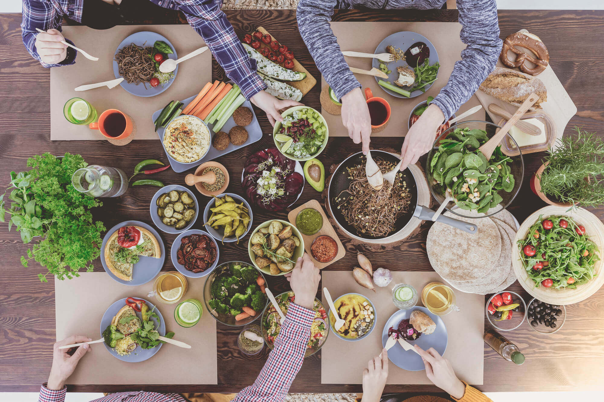

Stronger by the Plate is more than just a website — it’s a wellness movement built around the idea that the path to a long, healthy life begins with what’s on your plate. Inspired by the world’s Blue Zones — regions known for the highest concentrations of centenarians — we promote a lifestyle rooted in nutritious eating, joyful movement, and genuine social connection.
Our mission is to empower individuals of all ages to take control of their health by making sustainable, informed choices about food and fitness. We believe that small daily actions, like preparing a wholesome meal or taking a walk with friends, can have a powerful impact on overall well-being.
Whether you're starting your wellness journey or looking to refine your habits, Stronger by the Plate provides tools, education, and inspiration for anyone seeking better health. Students, busy parents, retirees, athletes, or anyone in between — you're welcome here.
We aim to be a trustworthy source of wellness knowledge that prioritizes balance, not extremes. We’ll never promote crash diets, unrealistic body standards, or one-size-fits-all fitness plans. Instead, we celebrate progress, not perfection — and we’re here to help you every step of the way.
